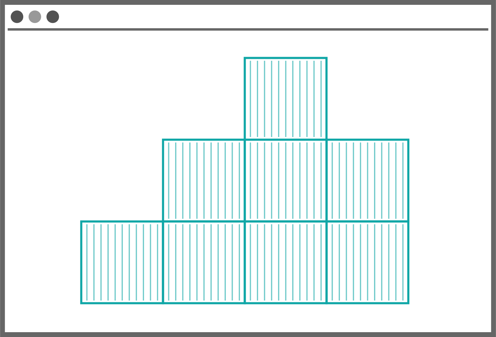
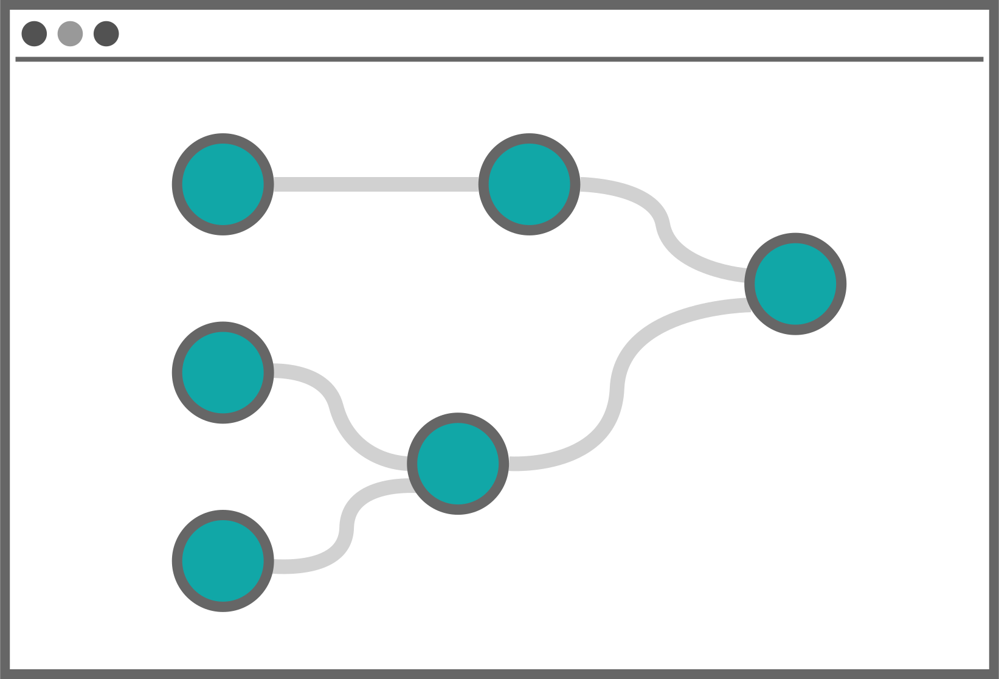

Our mission
Computational reproducibility is incredibly challenging. Complicated software dependencies, poor
documentation/communication, and human error leads to a great deal of disharmony and can impede
scientific progress.

In recent years, a technology which makes it easier to share software and run everywhere in exactly
the same way has become increasingly popular - software containers. Containers allow
developers to package software into a discrete environment with its own virtual file system and
dependencies. This means that whole teams can operate in a “single environment”, which minimizes
errors when sharing and testing code, making it easier to scale. Recent technologies such as Docker
(est. 2013) have automated
the process of creating and sharing software containers, spurring much broader adoption and lowering
the technical barrier to entry.
However, a major hurdle to reproducible software deployment persists - software containers may
contain all the “pieces” to perform an analysis (besides data), but not the instructions on how to
use them. It’s like having a box of ingredients without a recipe - every chef makes a different
dish. To help solve this issue, the concept of workflow descriptions has been applied to
containers to further enhance reproducibility, simplify software sharing/publication, and reducing
the
activation energy needed to start using a new algorithm or verify a scientific finding.

Simply put, the mission of the Rabix project is to further the reproducibility
of biomedical computing.
This is why much of the Rabix team are proud to be founding members of the Common Workflow Language,
a
community-driven effort to create a standard specification for reproducible workflows. Created in
2014, CWL is now widely-adopted among academic centers and industrial partners. The Rabix
Executor is an open-source technology for implementing Common Workflow Language to
its fullest potential.